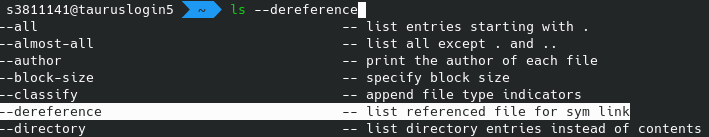
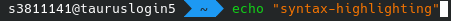
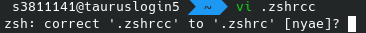
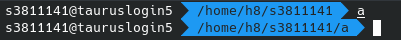
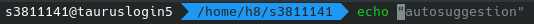

ZSH as Alternative Shell#
!!! warning Though all efforts have been made to ensure the accuracy and currency of the content on this website, please be advised that some content might be out of date and there is no continuous website support available. In case of any ambiguity or doubts, users are advised to do their own research on the content’s accuracy and currency.
The ZSH, short for z-shell, is an alternative shell for Linux that offers
many convenience features for productive use that bash, the default shell, does not offer.
This should be a short introduction to zsh and offer some examples that are especially useful
on ZIH systems.
oh-my-zsh#
oh-my-zsh is a plugin that adds many features to the zsh with a very simple install. Simply run:
marie@login$ sh -c "$(curl -fsSL https://raw.githubusercontent.com/ohmyzsh/ohmyzsh/master/tools/install.sh)"
and then, if it is not already your login shell, run zsh or re-login.
The rest of this document assumes that you have oh-my-zsh installed and running.
Features#
Themes#
There are many different themes for the zsh. See the
GitHub-page of oh-my-zsh for more details.
Auto-completion#
zsh offers more auto-completion features than bash. You can auto-complete programs, filenames, parameters,
man-pages and a lot more, and you can cycle through the suggestions with TAB-button.

Syntax-highlighting#
When you add this line to your ~/.zshrc with oh-my-zsh installed, you get syntax-highlighting directly
in the shell:
plugins+=(
zsh-syntax-highlighting
)

Typo-correction#
With
setopt correct_all
ENABLE_CORRECTION="true"
in ~/.zshrc you get correction suggestions when the shell thinks
that it might be what you want, e.g. when a command
is expected to be handed an existing file.

Automatic cd#
Adding AUTO_CD to ~/.zshrc file allows to leave out the cd when a folder name is provided.
setopt AUTO_CD

fish-like auto-suggestions#
Install zsh-autosuggestions to get fish-shell-like
auto-suggestions of previous commands that start with the same letters and that you can complete with
the right arrow key.

??? example “Addons for your shell”
=== “bash”
```bash
# Create a new directory and directly cd into it
mcd () {
mkdir -p \(1
cd \)1
}
# Find the largest files in the current directory easily
function treesizethis {
du -k --max-depth=1 | sort -nr | awk '
BEGIN {
split("KB,MB,GB,TB", Units, ",");
}
{
u = 1;
while ($1 >= 1024) {
$1 = $1 / 1024;
u += 1
}
$1 = sprintf("%.1f %s", $1, Units[u]);
print $0;
}
'
}
#This allows you to run `slurmlogpath $SLURM_ID` and get the log-path directly in stdout:
function slurmlogpath {
scontrol show job $1 | sed -n -e 's/^\s*StdOut=//p'
}
# `ftails` follow-tails a slurm-log. Call it without parameters to tail the only running job or
# get a list of running jobs or use `ftails $JOBID` to tail a specific job
function ftails {
JOBID=$1
if [[ -z $JOBID ]]; then
JOBS=$(squeue --format="%i \\'%j\\' " --me | grep -v JOBID)
NUMBER_OF_JOBS=$(echo "$JOBS" | wc -l)
JOBID=
if [[ "$NUMBER_OF_JOBS" -eq 1 ]]; then
JOBID=$(echo $JOBS | sed -e "s/'//g" | sed -e 's/ .*//')
else
JOBS=$(echo $JOBS | tr -d '\n')
JOBID=$(eval "whiptail --title 'Choose jobs to tail' --menu 'Choose Job to tail' 25 78 16 $JOBS" 3>&1 1>&2 2>&3)
fi
fi
SLURMLOGPATH=$(slurmlogpath $JOBID)
if [[ -e $SLURMLOGPATH ]]; then
tail -n100 -f $SLURMLOGPATH
else
echo "No slurm-log-file found"
fi
}
#With this, you only need to type `sq` instead of `squeue -u $USER`.
alias sq="squeue --me"
```
=== "`zsh`"
```bash
# Create a new directory and directly `cd` into it
mcd () {
mkdir -p $1
cd $1
}
# Find the largest files in the current directory easily
function treesizethis {
du -k --max-depth=1 | sort -nr | awk '
BEGIN {
split("KB,MB,GB,TB", Units, ",");
}
{
u = 1;
while ($1 >= 1024) {
$1 = $1 / 1024;
u += 1
}
$1 = sprintf("%.1f %s", $1, Units[u]);
print $0;
}
'
}
#This allows you to run `slurmlogpath $SLURM_ID` and get the log-path directly in stdout:
function slurmlogpath {
scontrol show job $1 | sed -n -e 's/^\s*StdOut=//p'
}
# `ftails` follow-tails a slurm-log. Call it without parameters to tail the only running job or
# get a list of running jobs or use `ftails $JOBID` to tail a specific job
function ftails {
JOBID=$1
if [[ -z $JOBID ]]; then
JOBS=$(squeue --format="%i \\'%j\\' " --me | grep -v JOBID)
NUMBER_OF_JOBS=$(echo "$JOBS" | wc -l)
JOBID=
if [[ "$NUMBER_OF_JOBS" -eq 1 ]]; then
JOBID=$(echo $JOBS | sed -e "s/'//g" | sed -e 's/ .*//')
else
JOBS=$(echo $JOBS | tr -d '\n')
JOBID=$(eval "whiptail --title 'Choose jobs to tail' --menu 'Choose Job to tail' 25 78 16 $JOBS" 3>&1 1>&2 2>&3)
fi
fi
SLURMLOGPATH=$(slurmlogpath $JOBID)
if [[ -e $SLURMLOGPATH ]]; then
tail -n100 -f $SLURMLOGPATH
else
echo "No slurm-log-file found"
fi
}
#With this, you only need to type `sq` instead of `squeue -u $USER`.
alias sq="squeue --me"
#This will automatically replace `...` with `../..` and `....` with `../../..`
# and so on (each additional `.` adding another `/..`) when typing commands:
rationalise-dot() {
if [[ $LBUFFER = *.. ]]; then
LBUFFER+=/..
else
LBUFFER+=.
fi
}
zle -N rationalise-dot
bindkey . rationalise-dot
# This allows auto-completion for `module load`:
function _module {
MODULE_COMMANDS=(
'-t:Show computer parsable output'
'load:Load a module'
'unload:Unload a module'
'spider:Search for a module'
'avail:Show available modules'
'list:List loaded modules'
)
MODULE_COMMANDS_STR=$(printf "\n'%s'" "${MODULE_COMMANDS[@]}")
eval "_describe 'command' \"($MODULE_COMMANDS_STR)\""
_values -s ' ' 'flags' $(ml -t avail | sed -e 's#/$##' | tr '\n' ' ')
}
compdef _module "module"
```
Setting zsh as default-shell#
Please ask HPC support if you want to set the zsh as your default login shell.